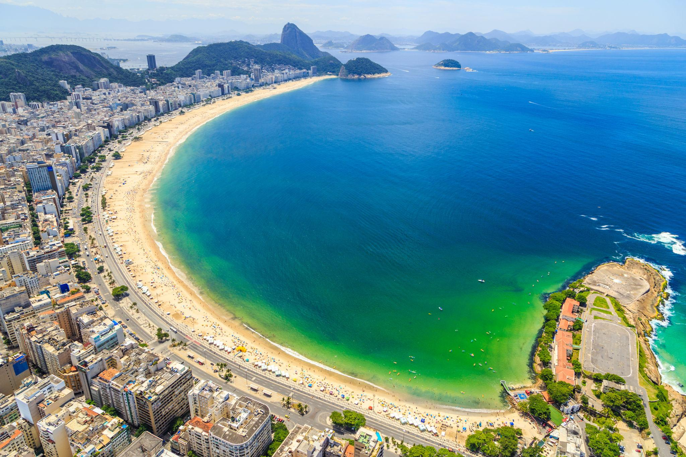
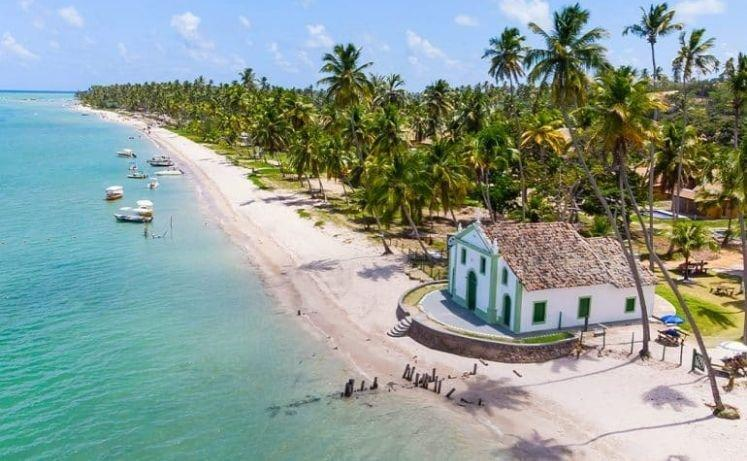
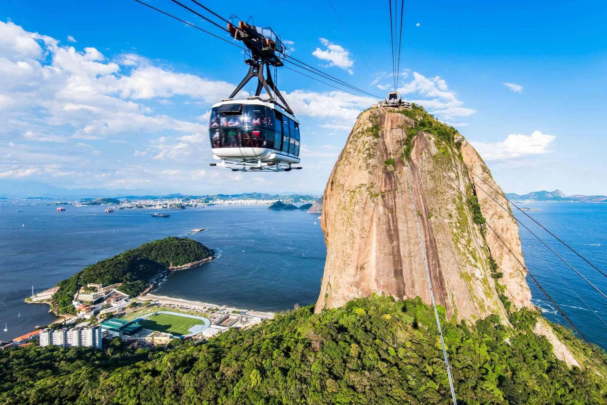
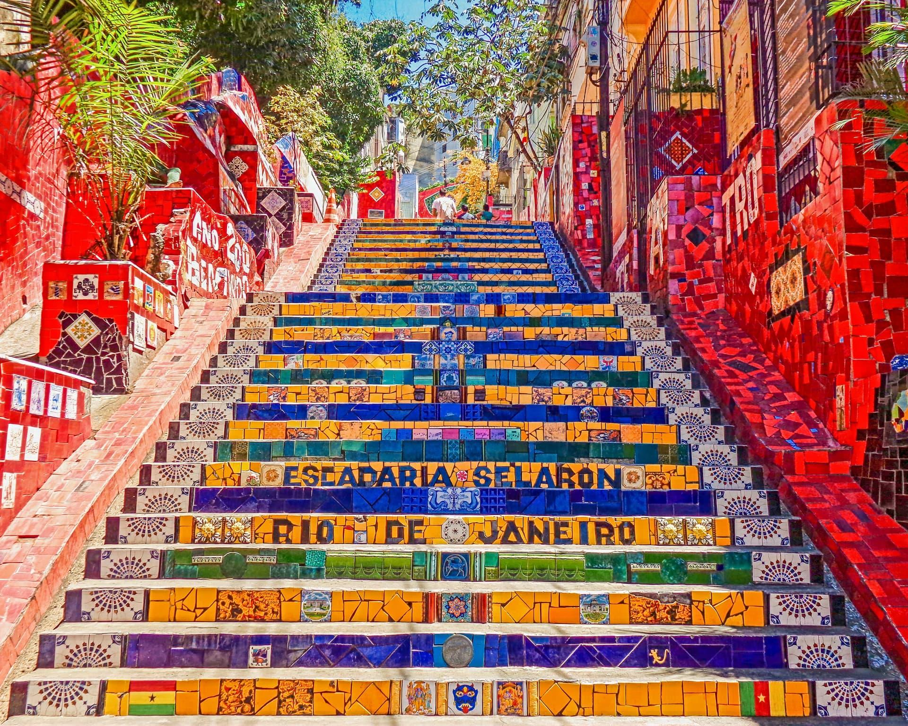
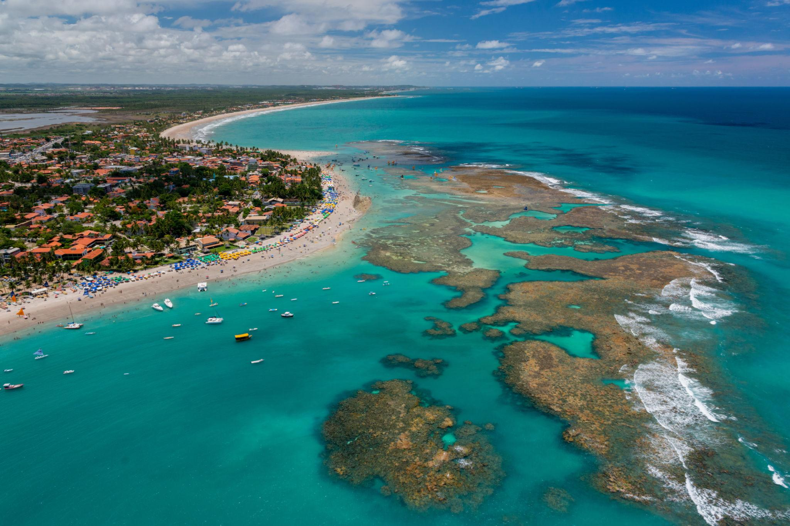
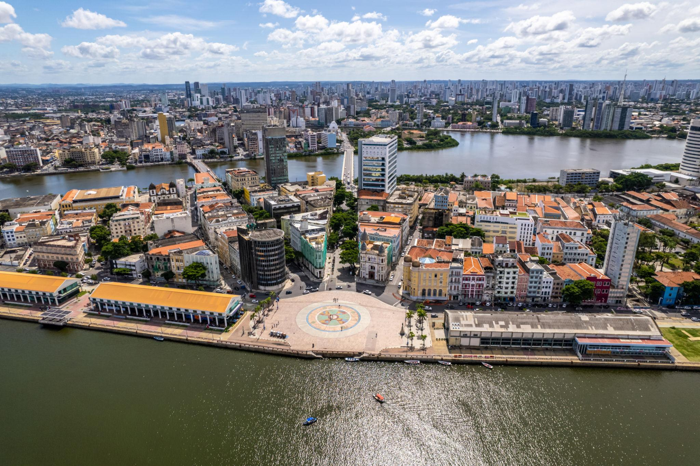
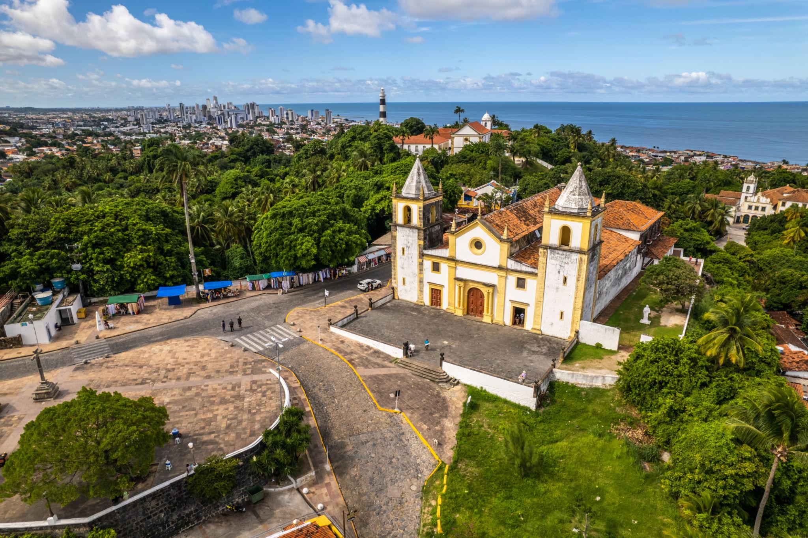

SUDESTE • BRASIL
Rio de Janeiro
Praias famosas, paisagens marcantes e uma energia que contagia.
Explore paisagens, descubra lugares especiais e encontre inspiração para conhecer o Rio de Janeiro e Pernambuco.
Do ritmo vibrante das cidades às praias de águas tranquilas, cada destino tem uma história esperando para ser descoberta.

Praias famosas, paisagens marcantes e uma energia que contagia.

Praias paradisíacas, centros históricos e cultura por toda parte.
“Viajar é descobrir que o Brasil cabe em muitas paisagens.”
MENDES DESTINOS
Entre o mar e as montanhas, descubra cenários que fazem do Rio um destino inesquecível.
Um dos cartões-postais mais conhecidos do Brasil, com uma vista ampla da cidade.
Calçadão famoso, orla movimentada e um dos cenários mais emblemáticos do Rio.
Um passeio de bondinho que revela belas paisagens da Baía de Guanabara.

Uma obra colorida feita de azulejos que se tornou símbolo da criatividade carioca.

Um destino de praias encantadoras, patrimônio histórico e experiências cheias de identidade.

No Recife Antigo, é um ponto de encontro e uma referência para conhecer a cidade.
Coqueiros, mar tranquilo e a charmosa igrejinha à beira-mar.
Conhecida pelas piscinas naturais e pelas águas claras na maré baixa.

Ruas históricas, ladeiras e arquitetura colonial em um cenário cheio de cultura.
O Mendes Destinos é um guia de inspiração turística criado para apresentar um pouco das belezas e experiências do Rio de Janeiro e de Pernambuco. A proposta é reunir destinos, informações e ideias de passeios em um só lugar.
Escolha um estado, explore os lugares e comece a imaginar sua próxima viagem.